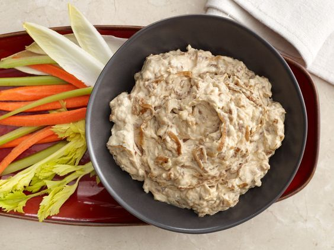
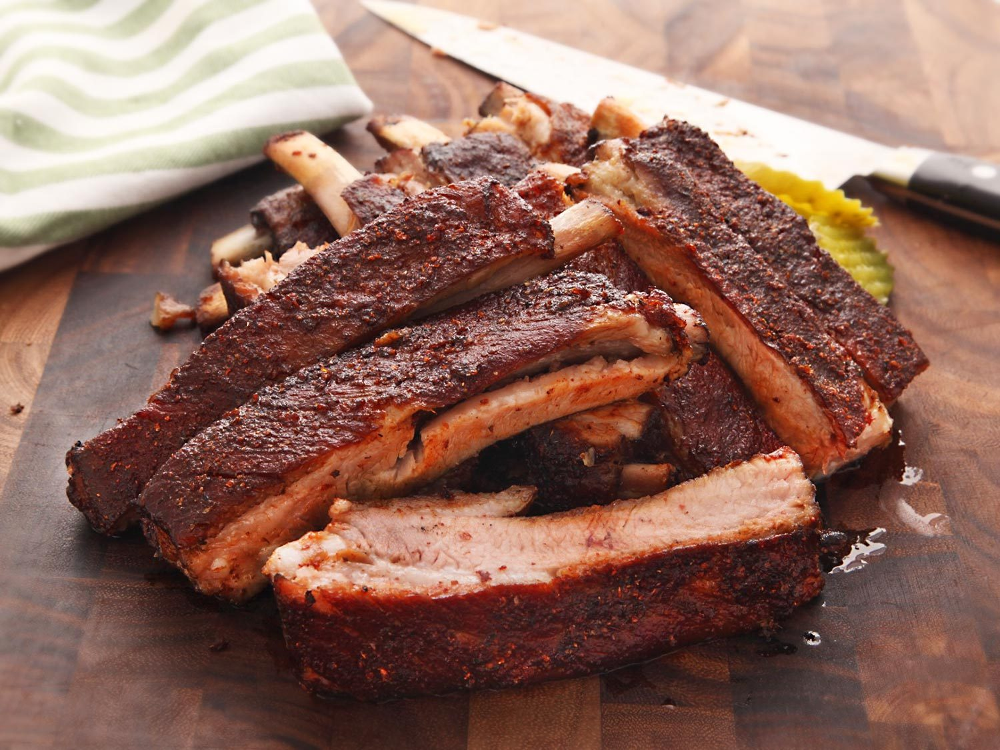

Savory Recipes
Whether you are looking for a weeknight meal for yourself or a dish to take to a friend's, we all need a few winners in our back pocket!
Here are a few of our favorite go-to savory dishes:
French Onion Dip

Ingredients
- 2 tablespoons canola oil
- 1 tablespoon butter
- 2 sweet onions, sliced into 1/4-inch rings (about 4 cups)
- 2 large shallots, sliced into 1/8-inch rings (about 1/2 cup)
- 2 cups sour cream
- 1 cup mayonnaise
- 1 teaspoon celery salt
- 1 teaspoon Worcestershire
- 1 teaspoon freshly ground black pepper
- 1 teaspoon salt
Directions
- In a large saute pan over low heat, add oil and butter.
- When butter is melted, add onions and saute stirring occasionally until golden brown and caramelized, about 35 minutes.
- Add shallots and some salt and saute for 15 minutes more until onions and shallots are dark brown.
- Remove from heat and let cool for 5 to 6 minutes, then chop into 1/4-inch pieces.
- Set aside to cool to room temperature.
- Meanwhile, in a medium bowl, combine sour cream, mayonnaise, celery salt, Worcestershire, salt and pepper.
- Fold in onion mixture.
- Chill at least 1 hour or overnight, prior to serving.
Sous Vide BBQ Ribs

Ingredients - Spice Rub
- 1/3 cup Paprika
- 1/3 cup Dark Brown Sugar
- 1/4 cup Kosher Salt
- 2 tablespoons whole yellow mustard seed
- 1 teaspoon freshly ground black pepper
- 2 tablespoons granulated garlic powder
- 1 tablespoon dried oregano
- 1 tablespoon whole coriander seed
- 1 teaspoon red pepper flakes
Ingredients - Sauce
- 1 medium yellow onion, grated on the large holes of a box grater
- 1 1/2 cups ketchup
- 2 tablespoons spicy brown mustard
- 1/3 dark molasses
- 1/4 cup Worcestershire sauce
- 1/4 cup apple cider vinegar
- 3/4 teaspoon Wright’s or Colgin liquid hickory smoke
Ingredients - For the Ribs
- 2 whole racks St.Louis-cut pork ribs
- About 3/4 teaspoon Wright’s or Colgin liquid hickory smoke
Directions
- For the Spice Rub: Working in batches, combine the paprika, brown sugar,
salt, Prague Powder (if using), mustard seed, black pepper, garlic powder, oregano, coriander seed, and red
pepper flakes in a spice grinder and reduce to a fine powder.
- For the Sauce: Combine 3 tablespoons spice rub, grated onion, ketchup, mustard,
molasses, Worcestershire sauce, vinegar, and liquid smoke in a medium saucepan and whisk to combine. Bring to a bare
simmer and cook until reduced and thickened, about 20 minutes. Set aside.
- Prepare the Ribs: Remove the papery membrane on the back of the ribs, using a paper
towel or kitchen towel to grip it and pulling it away in one piece. Divide each rack of ribs into three to four portions
with three to four ribs each by cutting through the meat in between the ribs. Rub ribs generously on all sides with the
remaining spice rub mixture. (Set aside 3 tablespoons spice rub if making dry-style ribs.)
- Place individual portions of rubbed ribs in vacuum bags. (Fold over the top of each bag while you add
the ribs so that no rub or pork juices get on the edges of the bags, which can weaken the seal.) Add 4 drops (about 1/8
teaspoon) of liquid smoke to each bag. Seal the bags, transfer to refrigerator, and let rest for 4 to 12 hours.
- When Ready to Cook: Set your precision cooker to 145°F (63°C) for extra-meaty ribs or
165°F (74°C) for more traditionally textured ribs.
- Add ribs to the water bath and cover it with a lid, aluminum foil, or table tennis balls. Cook for 36
hours at 145°F or 12 hours at 165°F. Transfer cooked ribs to a large bowl of water filled with ice to chill thoroughly.
Ribs can be stored in the refrigerator at this stage for up to 5 days before finishing.
- To Finish in the Oven: Remove ribs from vacuum bags and carefully pat dry with paper
towels. Adjust oven racks to upper and lower-middle positions and preheat oven to 300°F (150°C). Line two rimmed baking
sheets with aluminum foil and place a wire rack in each. Divide ribs evenly on racks, facing up. Transfer ribs to oven
and cook until surface is sizzling and ribs are heated through, about 20 minutes. Brush ribs with sauce and return to
oven for 10 minutes. Remove from oven, brush with another layer of sauce, and return to oven until sauce is dried and
sticky, about 10 minutes longer. Remove ribs from oven, paint with one last layer of sauce, and serve, passing extra
sauce at the table.
- To Finish on the Grill: Remove ribs from vacuum bags and carefully pat dry with paper
towels. Light one half chimney full of charcoal (about 2 1/2 quarts of coals). When all the charcoal is lit and covered
with gray ash, pour out and arrange the coals on one side of the charcoal grate. Set cooking grate in place, cover grill,
and allow to preheat for 5 minutes. Alternatively, set half the burners on a gas grill to the medium heat setting, cover,
and preheat for 10 minutes. Scrape the grill grates clean with a grill scraper, then oil the grates by holding an oil-dipped
kitchen towel or paper towels in a set of tongs and rubbing them over the grates 5 to 6 times. Place the ribs, facing up,
over the cooler side of the grill. Cover and cook until ribs are heated through and dry to the touch, about 15 minutes.
Brush ribs with a layer of sauce and transfer ribs to hotter side of grill. Cover and cook until sauce is mostly dry,
about 7 minutes. Brush with a second layer of sauce, cover, and cook until second layer is sticky, about 5 minutes longer.
Remove ribs from grill, paint with one last layer of sauce, and serve, passing extra sauce at the table.